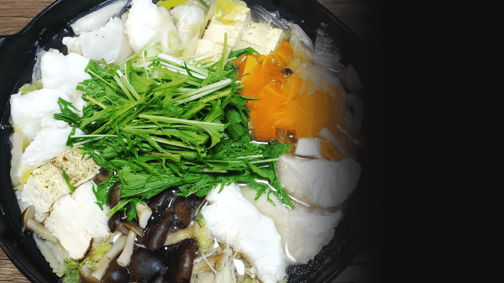

お品書き
天然あら（くえ）コース
幻の魚ともいわれ九州ではあらと呼ばれるくえ。その身はお刺身にすると深い味わいと甘みが溢れ、火を通すと皮と身の間に蓄えた脂と旨みが溶け出しコラーゲンたっぷりの ” くえ鍋 ” は一度たべるとその味を忘れられなくなる程です。仕入れから適切な処理をして魚体によって１～２週間ほど寝かせると余分な水分が抜け、旨みが凝縮されます。お造り、お鍋、しゃぶしゃぶと余す事なくくえをご堪能ください。
天然【あら(くえ)】コース内容
１５，５００円（税込み）
厳選ひらめコース
高級魚としてお馴染みのひらめですが、見た目から想像できないほど繊細で上品な白身は煮てよし焼いてよし、もちろんお刺身にしても絶品です。当店ではさらにより美味しいひらめをお客様に召し上がって頂くために、個体を厳選して仕入れ熟成し提供いたします。様々な味、食感、彩りをお楽しみ下さい。